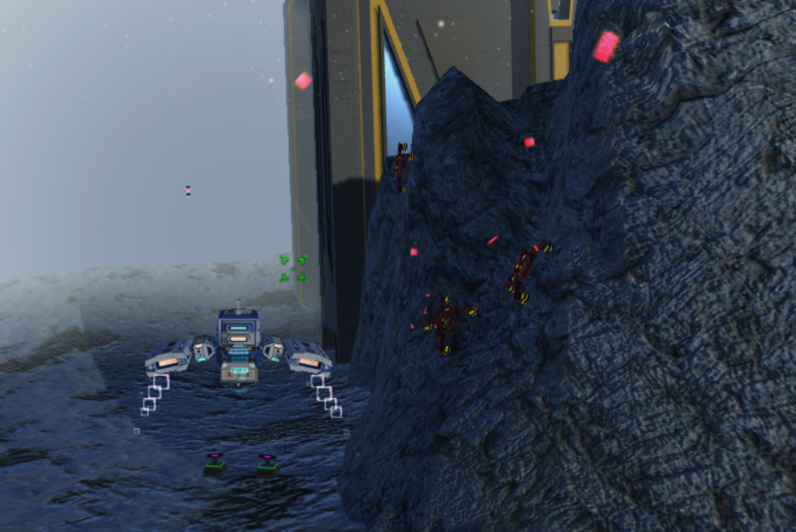

Vega: Factions War
- Developed in Unity 5
- Keyboard control and Siri remote adaptation
- C# scripting
- Blender3D for models and UVMapping
- Almost all assets are original or by free license
- 3 months development
Proyecto realizado como Trabajo Final de Grado de Ingeniería Multimedia, Universidad de Alicante.
Consistía en realizar un videojuego adaptado para AppleTV y su controlador remoto Siri. Tanto los controles como la jugabilidad están diseñados teniendo en cuenta las limitaciones y lo que puede ofrecer la plataforma. Se decidió usar como base de desarrollo Unity ya que se tendría que cubrir multitud de disciplinas como diseño, modelado, programación, estructuración, texturización, etc. al realizar un videojuego de manera individual, de esta manera, Unity permitiría organizar y desarrollar más rápidamente el proyecto. Se puede acceder a la memoría del proyecto en el siguiente enlace.